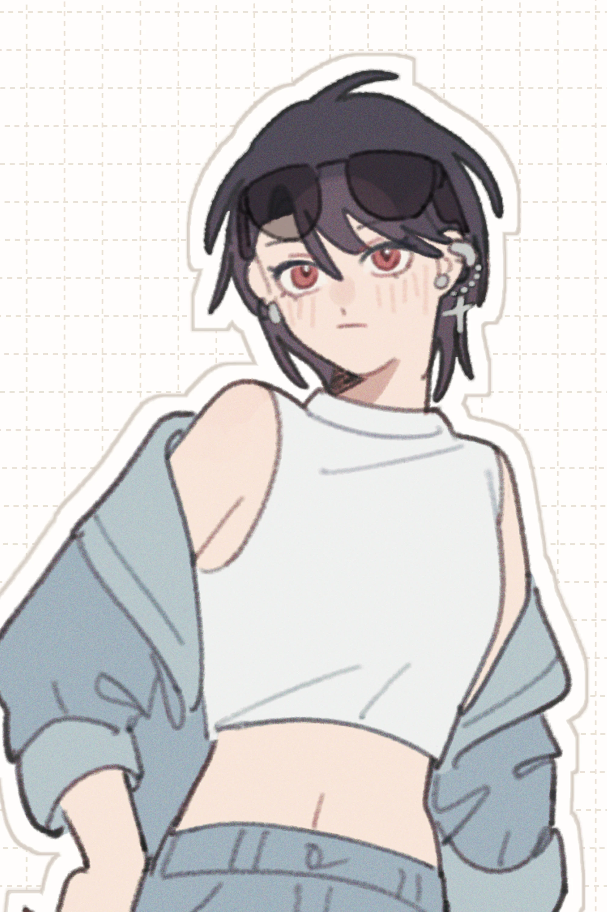

1
information
about site
こちらは夢小説を扱う二次創作サイトです。
サイト内においての全ての作品はフィクションであり、
現実とはなんら関係がありません。
フィクションゆえの暴力・犯罪が大好きであるため、
忠告なく不愉快な描写が出てくることがあります。苦手な方はお気をつけください。
名前変換・パスワードともにlocalStorageを使用しているため、
一度入力をしたら以後同じ端末での入力は必要ありません。
小説部分はダークモードにも対応しております。
about me
KAGAMIカガミ
@Kagami_hyaku
@Kagami_sab
pixiv
Profile

長編夢小説を中心に書いており、その他にデザイン、イラストの勉強をしています。
その他はプロフィールサイトを
夢小説は十万字からが本番だと思っていますが（※イカれている）、
これは自分に課した枷であり、短編を書ける人を尊敬してもいます。
努力をする人間の美しさが好きで、 その過程で起こる暴力や後悔、葛藤、決断も一緒に愛しています。
誰かがひどい目に遭えば遭うほど、立ち上がる時のきらめきが輝かしくなると 思っているので、大体そういう話ばかりを書いています。
長編ではずっと愛の話をしているつもりです。
update
scroll
- 20/09/14xxx +1
bookmark
- Favoriteサイト名（イチオシの話）
- RKRN
- 暮れ六つ半 （長編／トリップした女子が水軍にお世話になる）
- インスタントオペラ （短編連作／様子のおかしい六年）
- HQ
- 伽藍堂 （長編／木兎さんとマネージャー）
- FGO
- 怒りに燃える （中編／アーラシュはいい人じゃない）
2
contact
mail form
感想がありましたら、マシュマロ、
Wave Boxより送っていただけると嬉しいです。
マシュマロは千字、 Wave Boxは一万字まで送信可能です。
誤字脱字や表示が崩れているところの報告は、Wave Boxよりお願いします。